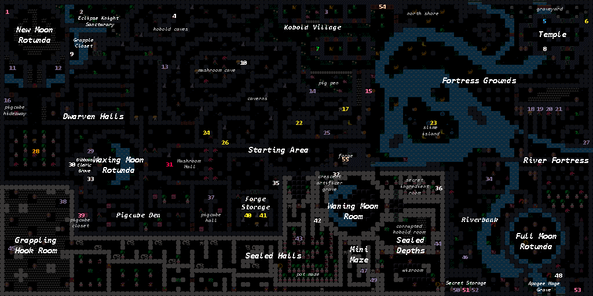

The Forged Curse Compendium
Lists of enemies and items you may encounter in The Forged Curse
Items

Hourglass
Use to rest, allowing for time to pass without an action. You can heal over time by resting.

Keys


Color coded keys that open doors of matching color.

Crowbar
Destroys barricaded doorways. Does not destroy barrels.

Grappling Hook
Hooks onto wooden objects and pulls you to them.

Push Rod
A magic rod that pushes heavy rocks.
Enemies

Amanita Mushroom
Red, spotted mushroom that releases confusion spores. Confusion messes with your controls.

Browncap
Brown mushroom that releases slow spores. Slow lowers your speed, allows enemies to take multiple turns before your next turn.

Lionsmane
Large mushroom that releases weak spores. Weak lowers your attack.
Maps and Guides

Map that displays the vanilla location of items and area names
- White: Progression items
- Yellow: Useful items
- Red/Orange/Green/Blue/White: Key Locations
- Lavender: Loot
- Pink: Heart Gems
- Peach: Non-chest progression items